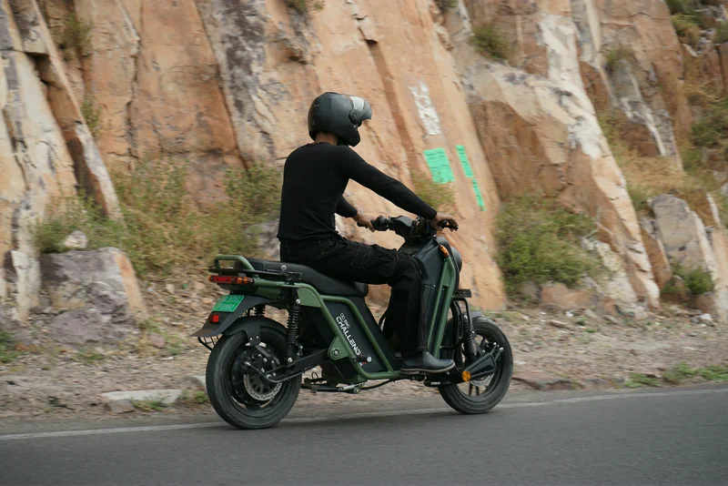
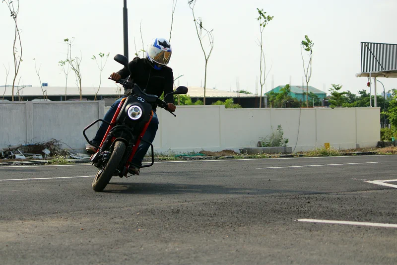
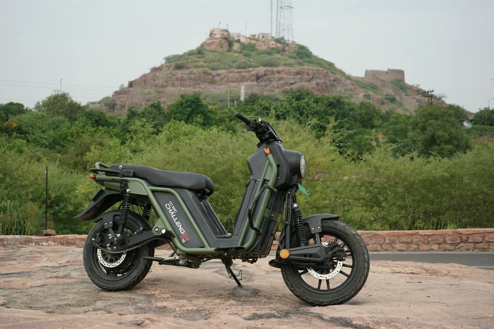
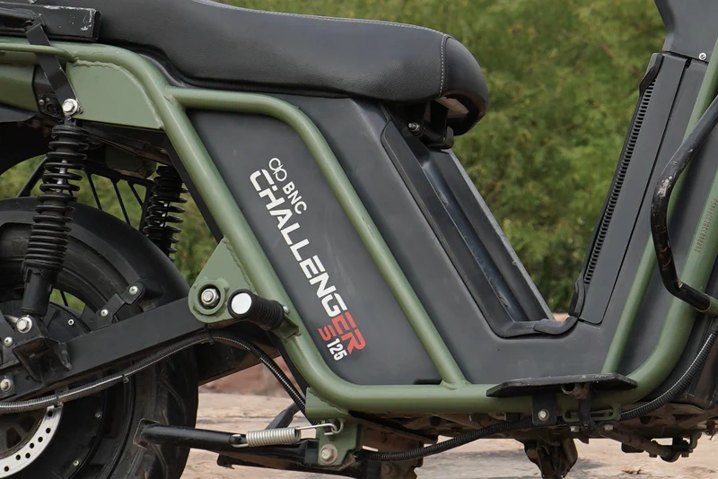
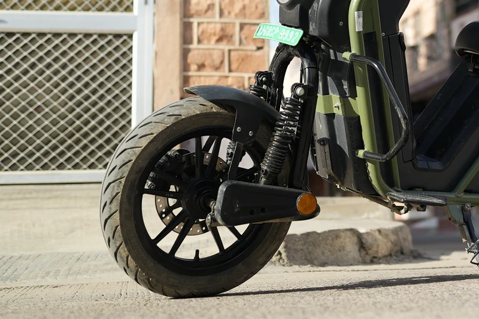

BNC Challenger: challenge the status quo
India’s multipurpose electric bike, built on an exoskeletal steel chassis, with a battery you lift out and charge from any 6A socket.
- on single charge
- 90kms
- at the wheel
- 3kW
- of loading capacity
- 200kg+
One ride for every job
Use it for work, use it for business or use it for leisure. The Challenger does it all.
Exoskeletal chassis for extra strength, toughness and rigidity
The dual-cradle chassis of the Challenger is made using high-tensile tubular steel. Its dual nature also allows it to protect all the internal components of the vehicle.
- Loading
- 200 kg+
- Frame
- High-tensile steel
Removable Etrol 40
An easy-to-remove, home-charging capable battery, which can be charged by any 6A socket.
- Capacity per pack
- 2.1 kWh
- Charges from
- 6A socket
30 litres boot space
Lift the seat for 30 litres of boot space*
*S110 model only
- Boot space
- 30 litres
- Model
- S110
3 kW peak hub motor
The BLDC hub motor paired with a 14-inch wheel offers exceptional power and city rideability.
- Peak power
- 3 kW
- Gradient
- 14°
Telescopic suspension, 14‑inch alloy wheels
The telescopic front suspension paired with 14-inch alloy wheels gives the Challenger a unique ride and handling package. Rough roads, rain, hills: you’re covered.
- Front suspension
- Telescopic fork
- Wheels
- 14-inch alloy
- Tyres
- 90/90 R14 tubeless
Colour: Crimson Red
It’s a picker-upper.
- Colours
- Four
The Challenger in real life








On the highway, off the tarmac and through town.
Never back down. Never stop.
- km range
- 90–180
- km/h top speed
- 65–70
- kWh battery
- 2.1–4.2
- gradient
- 14°
Lower figures are the S110, higher the S125. Range in Low mode, top speed in High mode.